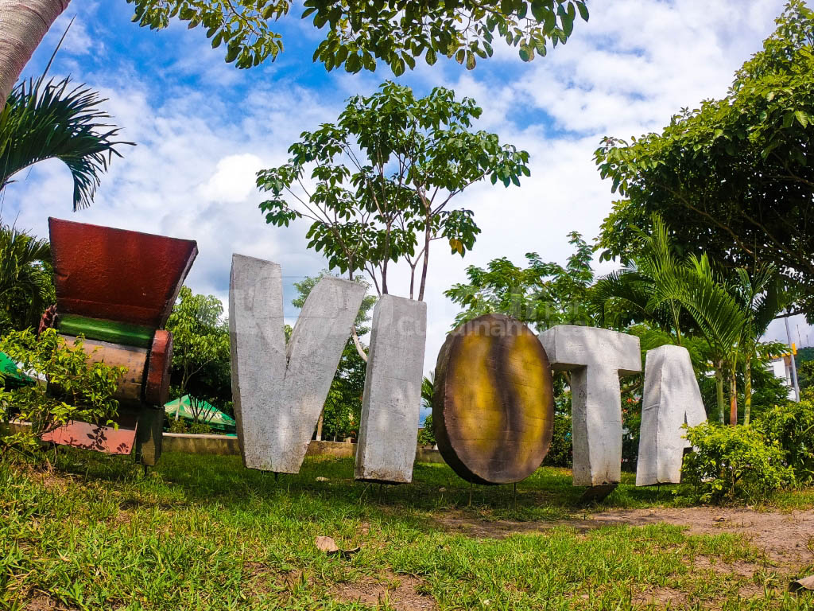
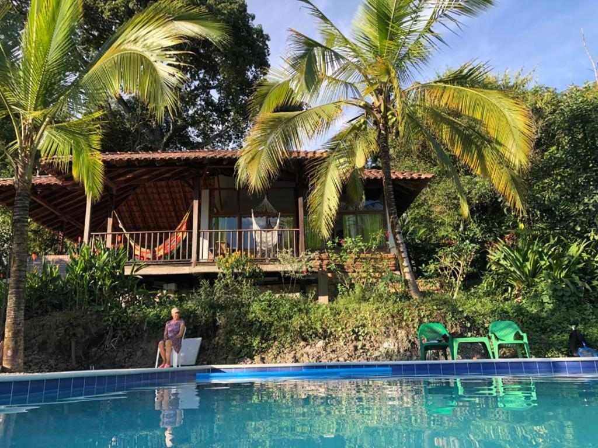
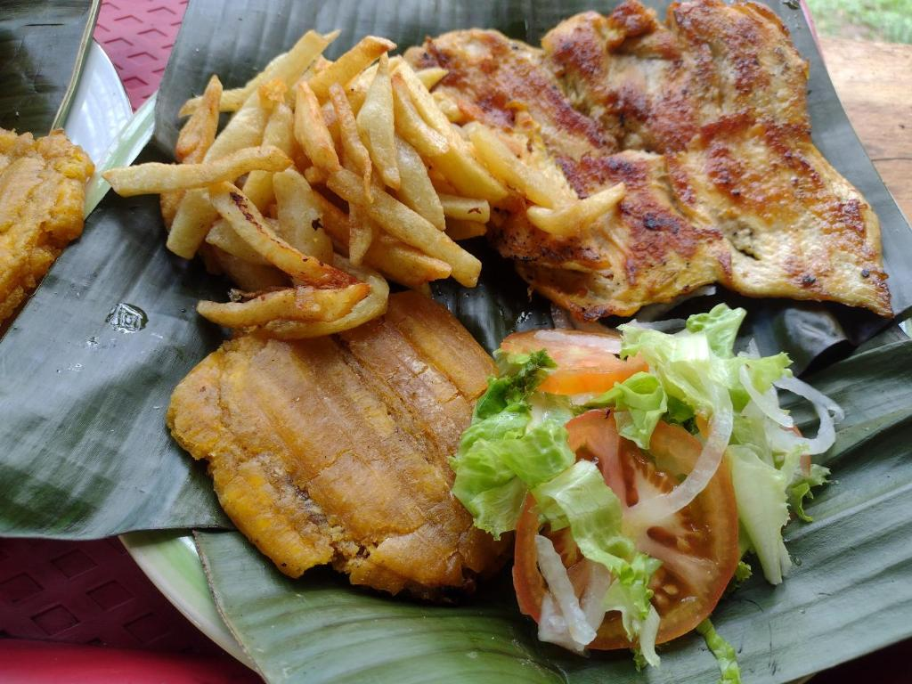

Historia y Atractivos de Viotá
Viotá es un municipio encantador ubicado en el departamento de Cundinamarca, Colombia, que se destaca por su clima cálido, sus paisajes frutales y su ambiente tranquilo. Situado a unos 86 km de Bogotá, Viotá es el destino ideal para quienes buscan escapar del bullicio de la ciudad y disfrutar de la naturaleza.

1. Precios (Carro y Peajes)
- Distancia: Aproximadamente 86 km desde Bogotá, lo que representa un viaje de 2 horas en carro.
- Peajes: Hay 2 peajes en el trayecto, con un costo aproximado de $15,000 COP cada uno.
- Gasolina: El costo de la gasolina para ida y vuelta está entre $50,000 - $80,000 COP, dependiendo del consumo del vehículo.
2. Hospedaje
- Hostales y cabañas: Desde $60,000 - $130,000 COP por noche.
- Hoteles boutique: Entre $150,000 - $300,000 COP por noche, dependiendo de las comodidades.
- Río Bogotá: Perfecto para disfrutar de caminatas y naturaleza a orillas del río.
- Fincas frutícolas: Viotá es famosa por sus cultivos de frutas tropicales como el maracuyá y el mango.
- Parque principal: Un lugar pintoresco donde puedes disfrutar de la cultura local, comprar artesanías y degustar comida típica.
- Viudo de pescado: Un plato típico de la región a base de pescado fresco, acompañado de yuca, plátano y arroz. Precio: $25,000 - $35,000 COP.
- Sancocho de gallina: Una deliciosa sopa tradicional. Precio: $20,000 - $30,000 COP.

3. Lugares Turísticos

4. Comida Típica
